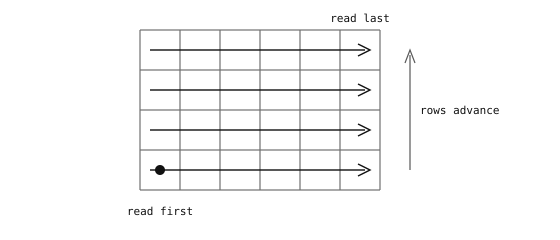

4.6. Gördülő és globális zár¶
Az érzékelő egyenként, cellánként olvassa ki a kétdimenziós képpontrácsát. A rögzített képet két dolog alakítja ebben a kiolvasásban: a sorrend, amelyben a képpontokat letapogatja, és az, hogy az egyes sorok expozíciós ablaka időben hogyan illeszkedik ehhez a letapogatáshoz. Az elsőt a szilícium rögzíti; a második két bevett változatban létezik, amelyek a mozgó jeleneteknél nagyon sokat számítanak.
4.6.1. Kiolvasási sorrend¶
A tipikus érzékelők a bal alsó képpontnál kezdenek, és jobbra haladva letapogatják az adott sort, majd a következő sorra lépnek felfelé, és ismét jobbra tapogatnak le, és így tovább, amíg a jobb felső sarokban be nem fejezik.

A képpontmátrix kiolvasása a bal alsó képpontnál kezdődik, soronként jobbra letapogatva, a sorok között pedig felfelé haladva a következő sorra.¶
A sorrend nem véletlen. A lencse vízszintesen tükrözi és függőlegesen fordítja a jelenetet, miközben az érzékelőre vetíti – a jelenet teteje az érzékelő aljára, a jelenet bal oldala pedig az érzékelő jobb oldalára kerül –, és a bal-alsó-majd-felfelé kiolvasás éppen abban a sorrendben járja be az érzékelőt, amely mindkét tükrözést visszafordítja, így a képpontok a memóriába a megfelelő állásban kerülnek.
4.6.2. Gördülő zár¶
A gördülő zárú (rolling-shutter) érzékelőben minden sort sorban exponálnak és olvasnak ki. Miközben az egyik sort olvassák, a következő még az expozícióját fejezi be, az azutáni épp csak elkezdte, és így tovább – minden sor expozíciós ablaka kissé eltolódik időben a következőhöz képest. Az érzékelő integrálási ablaka letapogatási sorrendben gördül végig a képkockán, és egy teljes letapogatás a teljes képkockaidőt veszi igénybe.
Álló jeleneteknél ez láthatatlan. A gyorsan mozgó jeleneteknél az eltolódás ferdülésként jelenik meg – egy tárgy, amely az első sor rögzítése és az utolsó sor rögzítése közötti időben elmozdul, ugyanannak a képkockának a különböző soraiban különböző helyeken jelenik meg.

Egy jobbra mozgó függőleges rúd, mindegyik zártípussal rögzítve. A gördülő zár megdönti a rudat, mert a képkocka teteje más időpontban olvasódik ki, mint az alja; a globális zár egyetlen pillanatban rögzíti a rudat.¶
A gördülő zár az olcsóbb kialakítás. Mivel minden sort azonnal kiolvasnak, miután befejezte az expozíciót, a képpont áramkörének nincs szüksége képpontonkénti árnyékolt tárolóra, amely a teljes érzékelőn átívelő kiolvasás során megőrizné az értékét. A megtakarított tranzisztorok révén a fotodióda a képpont területének nagyobb hányadát foglalja el, ami azonos fizikai képpontméret mellett közvetlenül nagyobb érzékenységet és kisebb zajt eredményez. A legtöbb fogyasztói képérzékelő emiatt gördülő zárú.
4.6.3. Globális zár¶
A globális zárú (global-shutter) érzékelőben minden képpont ugyanabban a pillanatban kezdi meg és fejezi be az expozícióját. A rögzített töltés ezután a képponton lévő árnyékolt tárolóterületre kerül, és a soronkénti kiolvasás onnan történik. A rögzített képkocka egyetlen időpillanatot képvisel, függetlenül attól, hogy a jelenet milyen gyorsan mozog.
A globális zár több szilíciumba kerül, és a költség a fotodiódát terheli. Ha minden sor értékét meg kell őrizni a teljes érzékelőn átívelő kiolvasás során, akkor minden képponton szükség van egy extra árnyékolt tárolócellára, plusz a tranzisztorokra, amelyek elválasztják azt a fotodiódától – olyan terület, amely egyébként magához a fotodiódához tartozna. A kisebb fotodióda időegységenként kevesebb fotont fog be, ezért egy globális zárú képpont kevésbé érzékeny, mint egy azonos méretű gördülő zárú képpont. Ugyanaz a jelenet hosszabb expozíciót vagy nagyobb erősítést igényel, hogy azonos fényerővel rögzüljön, és az extra áramkör ezen felül kissé megnöveli a kiolvasási zajt is.
A másik teher az expozíciós keretet érinti. Egy gördülő zárú érzékelőben minden sor expozíciója átfedi a szomszédos sorok kiolvasását, így minden sor csaknem a teljes képkockaidő alatt integrálhatja a fényt. Egy globális zárnál a kiolvasás nem kezdődhet el addig, amíg minden sor be nem fejezte az expozíciót, így adott képkockasebesség mellett a maximális expozíciós idő a képkockaidő mínusz a teljes kiolvasási idő. Azonos képkockasebesség esetén a gördülő zárú képpont több fényt kap képkockánként.
Ezek a költségek összeadódnak: a globális zárú érzékelők kisebb képpontszámúak, zajosabbak, kevésbé érzékenyek és képpontonként drágábbak, mint gördülő zárú megfelelőik. A csere csak akkor éri meg, ha a gyors mozgást tisztán kell rögzíteni.
4.6.4. Mikor melyiket használjuk¶
A zártípus az érzékelő hardveres tulajdonsága, nem szoftveres beállítás. A választás a kamera tervezésekor történik.
A gördülő zár megfelelő, ha:
a jelenet álló vagy lassan mozog;
az alkalmazás eltűr némi ferdülést (a legtöbb fényképezésnél és a legtöbb felhasználói felülettel kapcsolatos munkánál);
a költség és a dollárra vetített felbontás az elsődleges szempont.
A globális zár a helyes választás, ha:
a jelenet gyors mozgást tartalmaz, amelyet tisztán kell rögzíteni (robotika, drónok, szállítószalag-ellenőrzés);
maga a kamera rezeg vagy mozog egy statikus jelenethez képest;
a képet olyan látórendszeri algoritmus dolgozza fel, amely feltételezi, hogy minden képkocka egyetlen időpillanatot képvisel (a legtöbb pózbecslési és mozgásból-szerkezet (structure-from-motion) feldolgozási folyamat).
Megjegyzés
Az OpenMV Cam termékcsalád alapértelmezésben globális zárú érzékelőket használ a gépi látás céljaira, ahol a mozgó alanyon (vagy a mozgó kamerán) jelentkező mozgási elmosódás megzavarja a downstream észlelést és követést. Gördülő zárú érzékelőmodulok is elérhetők olyan alkalmazásokhoz, ahol egy lassú vagy statikus jelenet képminősége fontosabb, mint a gyors mozgás kimerevítése – a klasszikus, fényképezés jellegű rögzítéshez.